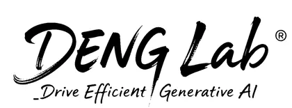

Joint WAM
Chunk Time 667.1 msTotal Time 68 s

DENG Lab ↗Streaming-WAM
Streaming-WAM introduces action-conditioned streaming for World Action Models. It overlaps inference with robot execution and conditions future video generation on the shared actions across adjacent chunks, aligning the predicted visual trajectory with the motion underway. The robot continues acting while the next prediction is prepared.
98.20%LIBERO average success
41.0 msLIBERO chunk time12.0× faster vs FastWAM
5.36 / 3.15 sLIBERO Long / Short total time3.0× / 2.6× faster vs FastWAM
Both controllers first predict a model chunk. Synchronous WAM then alternates prediction and robot execution, interrupting motion at every new prediction. Streaming-WAM keeps robot execution continuous while later predictions run concurrently. The paired ten-by-ten masks contain two chunks labeled Z0, Z1, Z2, As, and Ap. Standard Joint WAM has no cross-chunk attention. Streaming-WAM adds the aligned condition path from As and Ap in the first chunk to the Z1 visual-token queries in the next chunk. Filled cells indicate allowed attention, while dark outlined cells indicate masked connections.
Chunk Time 667.1 msTotal Time 68 s
Chunk Time 402.7 msTotal Time 60 s
Chunk Time 67.8 msTotal Time 33 s
9.8× Chunk · 2.1× Total
World Action Models (WAMs) jointly generate future visual observations and robot actions, allowing policies to reason about how the scene may evolve under interaction. Their iterative generation, however, is often slower than the robot control cycle: synchronous execution leaves the robot idle during inference, while naive asynchronous switching can create inconsistency between successive predictions.
We introduce Streaming-WAM, an action-conditioned streaming framework that overlaps WAM inference with robot execution. Shared actions across adjacent chunks condition future video generation, aligning the predicted visual trajectory with the motion underway; this action-conditioned future then guides a consistent action continuation. Streaming-WAM therefore brings streaming into world prediction rather than treating continuity only as an action space constraint. We evaluate the method on LIBERO, RoboCasa, and RoboTwin 2.0. On LIBERO, Streaming-WAM achieves 98.20% success with 41.0 ms chunk latency and 5.36/3.15 s total time on Long/Short tasks, yielding a 12.0× latency reduction and 3.0×/2.6× total-time speedups over FastWAM.
Insights from Our Exploration
Across our experiments, we identified three practical observations that shaped Streaming-WAM: video and action distillation behave differently, action conditioning benefits from strict temporal alignment, and partial action context needs an explicit representation.
Distillation behaves differently across modalities. On RoboTwin 2.0, the open-source FastWAM-Joint model achieves 87.0 overall success. Distilling both video and action generation to one step—the 1V1A setting—reduces the score to approximately 77.8, while keeping two steps for action generation—the 1V2A setting—recovers it to 86.0. This suggests that the loss comes mainly from aggressive action distillation. Our interpretation is that video latents contain spatial and temporal redundancy, whereas actions are the final control outputs: small biases in a 32-step, 14-dimensional dual-arm trajectory can directly affect contact, coordination, and grasp stability. One-step action generation may therefore require additional training structure or conditioning rather than serving as a drop-in replacement for an iterative sampler.
Action conditioning should respect the action-to-frame correspondence. Our design pairs 32 action steps with nine video frames sampled every four control steps. With a temporal-compression factor of four, the video stream contains the observed group Z0 and two future groups, Z1, Z2, each corresponding to a 16-action interval. The condition stream likewise covers 16 positions: eight shared actions As followed by eight unknown positions Ap. We therefore add action-conditioned attention only to Z1, whose temporal range contains those shared actions. Applying the same context to Z2 would mix actions and visual states from different time ranges.
Condition slots make partial action context usable. The fixed 16-slot condition stream combines eight shared-action slots with eight learned unknown placeholders. A learned state embedding distinguishes an unavailable action from a zero-valued or no-op command, while the fixed layout keeps attention routing and compiled inference shape-stable. These slots provide structured context to the visual branch without replacing the normal action stream. Together, these findings connect efficient distillation, temporally aligned conditioning, and explicit uncertainty into a coherent design for Streaming-WAM.
World Action Models and the Real-Time Gap
World Action Models (WAMs) jointly predict future visual representations and action chunks, allowing robot policies to connect action generation with object motion, physical interaction, and task progress [1]. The visual branch provides a temporally structured account of how the scene may evolve, while the action branch turns that prediction into a multi-step control plan. This coupling has produced strong manipulation performance, but iterative generation over both modalities is often much slower than the robot control cycle.
Under synchronous deployment, inference and execution are serialized: the robot finishes its current chunk, waits for the next prediction, and only then resumes motion. Model latency therefore becomes idle time or repeated stale commands. Because the observation that launched inference is also aging during this pause, recent changes in object state, contact, or robot motion cannot influence the policy until the next update.
Longer action horizons reduce the frequency of model calls but commit the robot to a staler open-loop plan. Faster inference shortens the wait, yet any remaining latency still lies on the critical path. The deployment gap is therefore not only a question of model speed, but also of how prediction and execution are scheduled. Real-time WAM deployment requires prediction to overlap ongoing motion without losing consistency between the predicted world evolution and the actions actually executed.
Asynchronous Execution Beyond Action Continuity
Asynchronous execution starts the next prediction before the current action chunk is exhausted. This creates a temporal overlap in which the same actions are shared across adjacent chunks, and the incoming prediction must remain consistent with the motion already underway. Accurate temporal alignment is therefore essential: even individually valid chunks can be joined at the wrong steps if the handoff time is misidentified [2].
Real-time chunking (RTC) constrains the incoming chunk at inference time through inpainting-style guidance of the denoising trajectory [3]. Because this guidance is recomputed at every denoising step, it adds inference cost; as a soft constraint, it can also leave residual disagreement in the delay region [2]. Prefix-conditioned methods move the constraint into learned generation: delay-region actions are provided as clean context, and Training-Time RTC learns to produce the remaining action continuation from that context [2,4]. When runtime latency falls outside the delay distribution represented during training, the clean context may no longer match the actual handoff [4].
Both approaches align action trajectories rather than predicted world evolution. RTC steers the overlap between adjacent chunks, while prefix conditioning fixes the known action segment, but neither explicitly tells the visual branch how the shared actions transform the scene. This distinction matters in a WAM because the next action is generated together with a predicted account of the world. LingBot-VA 2.0 addresses the visual state through FDM grounding. It refreshes the visual cache with the latest observation, appends the executing action, and predicts that action's visual outcome as context for decoding the next action [5]. This extra grounding pass adds future-state prediction before each action update, a practical cost at high control rates.
Streaming-WAM instead couples action continuity with world prediction inside a joint WAM. It reuses shared actions across adjacent chunks and routes them both directly into each Stream Update and into shared action slots. Together with the unknown action slots, the resulting condition slots guide future visual generation in the same joint update that produces the next visual-action chunk, while robot execution continues.
Streaming-WAM aligns world prediction with continuous robot execution.
Streaming-WAM is a streaming formulation for joint World Action Models. It overlaps model inference with robot execution and uses the actions scheduled during that overlap to condition the next prediction. Instead of pausing at every chunk boundary, the robot continues moving while the model prepares the next visual and action chunk. Because the model knows what motion will occur during inference, its world prediction remains aligned with ongoing execution rather than relying on the observation alone.
Cold start follows the same procedure as a standard Joint WAM. Streaming begins before the first action chunk A0 is exhausted. In the first temporal overlap shown in the figure, Observation O1 starts a Stream Update after the executed actions A0[0:8]. The robot continues with the shared actions A0[8:16] while the update prepares the next video chunk V1 and action chunk A1. These commands also form the beginning of the incoming action chunk, giving A0[8:16] = A1[0:8]. At the end of the temporal overlap, the controller switches to the incoming action chunk at index 8 and continues with its newly predicted postfix actions, rather than repeating the shared actions. Later Stream Updates repeat the same temporal-overlap pattern, placing model prediction inside continuous robot execution.

A method diagram showing model updates overlapped with continuous robot execution. Shared actions connect the current and incoming chunks, enter both the action and condition paths, and condition future visual prediction through directed attention.
A Stream Update retains the joint video-and-action prediction of a Joint WAM, but changes how the incoming chunk is constructed. The video chunk Vt+1 contains Z0, Z1, Z2: Z0 represents the new Observation Ot+1, while Z1, Z2 represent the visual future generated from it. The 32-action chunk At+1 begins with eight shared actions and continues with 24 postfix actions. Shared actions are already determined by the motion underway, whereas postfix actions are the new actions produced by the current Stream Update. The shared actions therefore anchor the incoming action chunk while also providing the motion context used to predict its visual future.
Action-conditioned attention introduces this motion context through a directed addition to the Joint WAM rather than unrestricted mixing between adjacent chunks. Standard Joint WAM inference contains no corresponding action-conditioned path across chunks. Streaming-WAM adds one so that the shared actions from the temporal overlap can guide the next Z1 visual-token group. Z0, Z2 retain the original visual connections, and the action output retains its shared-actions-plus-postfix-actions structure. The added path therefore conditions the next visual future on the motion already underway without replacing the original joint video-and-action computation. One-step consistency distillation makes completion within the temporal overlap practical by reducing each Stream Update to a single denoising step. When the update is ready before the shared actions end, model prediction stays off the critical path of robot execution.
Condition slots give the attention route a fixed-size representation of the action context. During an overlap Stream Update, the 16-slot condition stream contains eight shared action slots followed by eight unknown action slots. The shared slots encode the actions already scheduled while inference is running. The unknown slots contain learned placeholder embeddings, not the values of the 24 postfix actions being predicted. In the two-chunk attention diagram, these groups are labeled As, Ap: As denotes the shared-action slots, whereas Ap denotes the unknown placeholder slots—not the postfix action outputs. Inside each Mixture-of-Transformers (MoT) block, shared-slot queries attend to Z0 and the shared-slot group, while unknown-slot queries attend to Z0 and all 16 condition slots. The Z1 visual queries then attend to the complete condition stream, allowing the ongoing shared actions to condition the next visual future. The condition stream does not replace the normal action stream or connect directly to action queries: the shared actions also enter the incoming action chunk as its fixed prefix, while the 24 postfix actions are generated through the original joint video-and-action computation.
Task performance. We evaluate FastWAM-Joint and its streaming variant on LIBERO and RoboTwin 2.0, and apply the same streaming design to X-WAM on RoboCasa. All evaluations use four NVIDIA H100 GPUs.
We compare against general purpose robot policies and WAM baselines on task performance, and against WAM baselines on inference efficiency. CD denotes one-step consistency distillation. On LIBERO, we also ablate action conditioning and the slot encoder to assess each component. Best and second best task results are shown in bold and underlined, respectively.
LIBERO evaluation covers four suites: Long, Spatial, Goal, and Object, with 10 tasks per suite and 50 trials per task. We report average success across suites; Episode Time is reported separately for Long and Short tasks in the efficiency results.
| Method | Long | Spatial | Goal | Object | Average ↑ |
|---|---|---|---|---|---|
| OpenVLA | 53.7 | 84.7 | 79.2 | 88.4 | 76.5 |
| π₀ | 85.2 | 96.8 | 95.8 | 98.8 | 94.1 |
| π₀.₅ | 92.4 | 98.8 | 98.0 | 98.2 | 96.9 |
| Motus | 97.6 | 96.8 | 96.6 | 99.8 | 97.7 |
| Fast-WAM | 95.2 | 98.2 | 97.0 | 100.0 | 97.6 |
| FastWAM-Joint-CD | 97.20 | 99.60 | 98.60 | 100.00 | 98.85 |
| FastWAM-RTC | 58.40 | 76.20 | 77.00 | 83.40 | 73.75 |
| Streaming-WAM (Ours) | 96.60 | 98.80 | 97.40 | 100.00 | 98.20 |
| Streaming-WAM w/o Action Conditioning | 94.40 | 96.40 | 96.60 | 97.60 | 96.25 |
| Streaming-WAM w/o Slot Encoder | 95.60 | 98.40 | 96.80 | 99.80 | 97.65 |
RoboTwin 2.0 evaluates 50 tasks with 100 rollout episodes per task. Clean reports the easy setting and Random reports the hard domain-randomization setting.
| Method | Clean ↑ | Random ↑ | Total ↑ |
|---|---|---|---|
| FastWAM-Joint | 86.4 | 87.6 | 87.0 |
| FastWAM-CD | 86.2 | 85.8 | 86.0 |
| StreamingWAM | 90.4 | 90.8 | 90.6 |
RoboCasa follows the standard 24-task protocol, with 50 trials per kitchen manipulation task and average success reported across tasks.
| Method | Average Success ↑ |
|---|---|
| π₀.₅ | 41.4% |
| π₀-FAST | 61.2% |
| π₀ | 62.5% |
| Cosmos Policy | 67.1% |
| X-WAM | 75.42% |
| X-WAM-CD | 75.33% |
| Streaming-WAM (Ours) | 75.35% |
We evaluate standard Joint WAM inference, its distilled 1V10A variant, and Streaming-WAM on the same real robot manipulation task using a single NVIDIA GeForce RTX 5090 at a 25 Hz control frequency. Streaming-WAM reduces Chunk Time to 67.8 ms and completes the rollout in 33 s.
| Method | Inference strategy | Chunk Time ↓ | Episode Time ↓ |
|---|---|---|---|
| Joint WAM | Synchronous | 667.1 ms | 68 s |
| Distilled WAM (1V10A) | One-step distilled | 402.7 ms | 60 s |
| Streaming-WAM (Ours) | Action-conditioned streaming | 67.8 ms | 33 s |
Inference efficiency. Task success alone does not characterize runtime efficiency. We therefore report Chunk Time, the latency required to prepare the next action chunk, and Episode Time, the duration of a complete rollout, including inference, execution, and replanning.
Across all three benchmarks, Streaming-WAM reduces both runtime measures while maintaining comparable task success. On LIBERO, it achieves a 12.0× Chunk Time speedup over FastWAM and Episode Time speedups of 3.0× and 2.6× on Long and Short tasks, respectively, with 98.20% average success. On RoboTwin 2.0, relative to FastWAM-Joint, StreamingWAM reduces Chunk Time from 652.1 ms to 54.4 ms and Episode Time from 32.97 s to 23.89 s, while increasing overall success from 87.0 to 90.6. On RoboCasa, relative to X-WAM, Streaming-WAM achieves a 3.2× Chunk Time speedup and a 1.8× Episode Time speedup, with comparable average success (75.35% versus 75.42%).


| Benchmark | Method | Chunk Time | Episode Time |
|---|---|---|---|
| LIBERO | FastWAM | 493.0 ms | 16.31 s Long / 8.25 s Short |
| LIBERO | FastWAM-Joint-CD | 114.2 ms | 6.89 s Long / 3.74 s Short |
| LIBERO | FastWAM-RTC | 142.3 ms | 6.23 s Long / 3.20 s Short |
| LIBERO | Streaming-WAM | 41.0 ms | 5.36 s Long / 3.15 s Short |
| LIBERO | Streaming-WAM w/o Action Conditioning | 35.1 ms | 5.20 s Long / 2.92 s Short |
| LIBERO | Streaming-WAM w/o Slot Encoder | 36.3 ms | 5.31 s Long / 3.01 s Short |
| RoboTwin 2.0 | FastWAM-Joint | 652.1 ms | 32.97 s |
| RoboTwin 2.0 | FastWAM-CD | 165.2 ms | 25.21 s |
| RoboTwin 2.0 | StreamingWAM | 54.4 ms | 23.89 s |
| RoboCasa | X-WAM | 374.07 ms | 17.36 s |
| RoboCasa | X-WAM-CD | 134.37 ms | 13.04 s |
| RoboCasa | Streaming-WAM | 115.98 ms | 9.49 s |
Streaming-WAM enables a World Action Model to prepare its next prediction while the robot continues executing the current action chunk.
At its core, the shared actions between adjacent chunks are not treated only as an action continuity constraint. They condition future video generation, allowing the predicted visual trajectory to account for the motion already underway before guiding the next action continuation. One-step consistency distillation and the accelerated runtime further reduce generation latency so that prediction can remain within the available execution window.
Results on LIBERO, RoboCasa, RoboTwin 2.0, and the real robot experiment show that this design reduces Chunk Time and Episode Time while preserving competitive task success. Taken together, the results support a simple conclusion: real-time WAM deployment requires both fast inference and alignment between ongoing execution and predicted world evolution; latency and task success should therefore be evaluated together.
@misc{denglab2026streamingwam,
title = {Streaming-WAM: Streaming Your World-Action Model for Real-Time Robot Manipulation},
author = {{DENG Lab}},
year = {2026},
howpublished = {Project page},
organization = {Shanghai Jiao Tong University},
url = {https://sjtu-deng-lab.github.io/Streaming-WAM/}
}